St. George Jacobite Syrian Church, Cheruthottukunnel
Under the Holy Apostolic See of Antioch and All the East
"For where two or three gather in my name, there am I with them. - Matthew 18:20"
About the Holy Church
The Syriac Orthodox Church is one of the ancient Christian traditions of the Middle East, tracing its roots to the early Christian community of Antioch, where followers of Jesus were first called Christians. It belongs to the family of Oriental Orthodox Churches and preserves the West Syriac liturgical tradition, using Classical Syriac, a dialect closely related to the language spoken by Jesus. The church emphasizes continuity with apostolic faith, sacramental life, and rich liturgical worship centered on the Holy Eucharist.
Christianity in India, especially in Kerala, has ancient origins traditionally linked to St. Thomas the Apostle. Over centuries, the Malankara Christian community developed close ecclesiastical ties with the Syriac Orthodox Patriarchate of Antioch. From this relationship emerged the Jacobite Syrian Orthodox Church, which represents the Indian archdiocese of the Syriac Orthodox Church. The term “Jacobite” historically refers to followers of St. Jacob Baradaeus, a key figure in preserving the Syriac Orthodox faith during times of persecution, and in India it signifies loyalty to the Patriarch of Antioch.
The Jacobite Syrian Orthodox Church in India is deeply rooted in Kerala’s religious and cultural life. It follows the same theology, liturgy, and sacramental practices as the global Syriac Orthodox Church, while also reflecting Indian traditions and local customs. Parishes, monasteries, and seminaries play a central role in nurturing spiritual life, education, and social service. The church has been especially influential in preserving Syriac liturgical heritage in India through worship, music, and theological education.
The spiritual hierarchy of the Syriac Orthodox tradition is clearly structured. At the highest level is the Patriarch of Antioch and All the East, who serves as the supreme spiritual head of the entire Syriac Orthodox Church worldwide. Under him are Metropolitans (Archbishops) and Bishops, who oversee dioceses and regions. In India, the Jacobite Syrian Orthodox Church is led by a Catholicos of India (also called the Catholicos of the East), who governs the Indian faithful in communion with the Patriarch. Beneath the bishops are priests, deacons, and other clergy, all working together to guide the faithful in worship, doctrine, and spiritual life.
About the Parish
St. George Jacobite Syrian Church, Cheruthottukunnel is a parish of the Jacobite Syrian Orthodox Church, functioning under the spiritual authority of the Syriac Orthodox Patriarch of Antioch. Dedicated to St. George (Mar Geevarghese Sahada), the church follows the West Syriac liturgical tradition and faithfully upholds the theology, worship, and sacramental life of the Syriac Orthodox Church.
The parish serves the spiritual and pastoral needs of the faithful in and around Cheruthottukunnel and stands as an important center of prayer, fellowship, and community life. Regular Holy Qurbono, feast celebrations, and parish activities help nurture Orthodox faith and tradition, strengthening the spiritual life of families across generations.
A distinctive spiritual treasure of the church is the presence of the sacred relics of the Forty Martyrs of Sebastia, revered early Christian soldiers who bore witness to their faith through martyrdom. These holy relics hold deep devotional significance for the faithful, inspiring steadfastness, unity, and courage in Christian life, and adding to the church’s role as a place of reverence, pilgrimage, and prayer.
During the period of stay at Karingachira Cathedral, St. Gregorios of Parumala (Parumala Kochu Thirumeni) visited our church in 1901.
Late lamented His Holiness Moran Mor Ignatius Zakka I, the Patriarch of Antioch and All the East visited our church on March 1, 1982.
Late Lamented His Beatitude Aboon Mor Baselios Thomas I, the Catholicos of the Holy Jacobite Syrian Orthodox Church (part of the Universal Syriac Orthodox church in India) stayed at the parish during the holy week and lead the passion week services in 2018.
An Agreement is registered with Perumbavoor Sub-Registrar, which clearly states how the Church and it's council should function.
The second clause on the said agreement states that, the church shall be under the Holy Apostolic See of Antioch and All the East.
The third clause of the said agreement states that church must follow the faith and traditions of the Holy Syriac Orthodox Church.
The church has a chapel in the name of Late Lamented Patriarch of Antioch and All the East Moran Mor Ignatius Alias III, reasting in peach at Manjinikkara Dayro.
Parish sunday school educated children and youth in the faith and traditions of the Holy Syriac Orthodox Church.
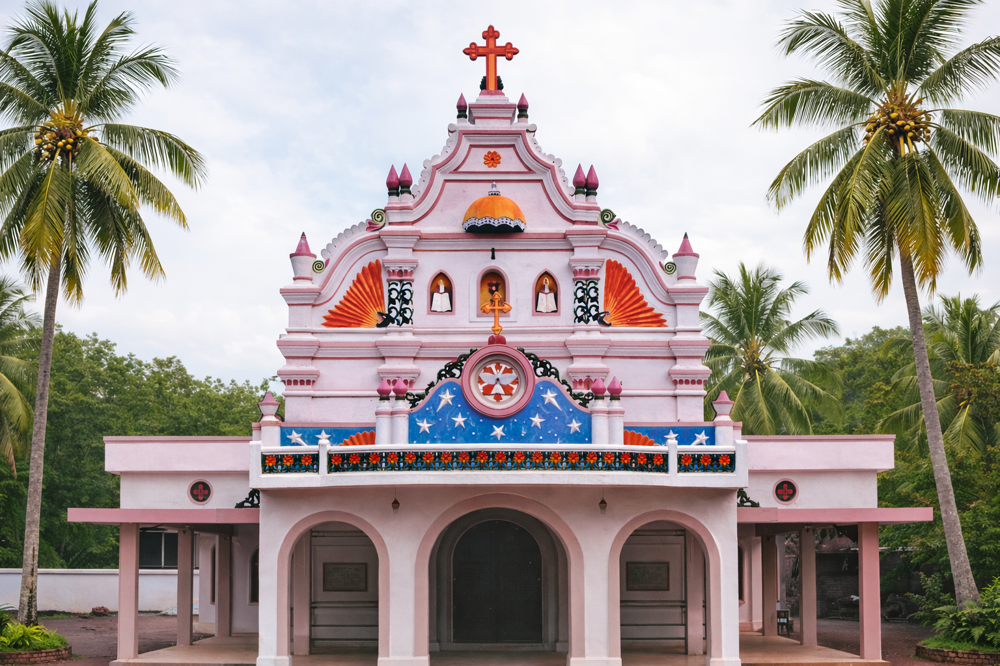
Church before renovation in 2015
Our Spiritual Leadership
Since St. Peter has assumed the leadership of the Church and had make use of Antioch as the capital to lead the Church, those who are ordained as Patriarchs by the church to succeed St.Peter are no doubt the successors and emissaries of St.Peter. The divine grace is handed down from Jesus to St.Peter, St.Peter to his successors the Metropolitans to Priests, and from Priests to the laity. Thus in the Syrian Orthodox Church the Patriarch represents the first and the foremost link in respect of the apostolic succession and divine priesthood.
Second to His Holiness the Patriarch, is the Catholicos of the East, ordained as Catholicos by His Holiness the Patriarch himself, along with other bishops of the holy Church.
Our Patriarch
Patriarch of Antioch and All the East
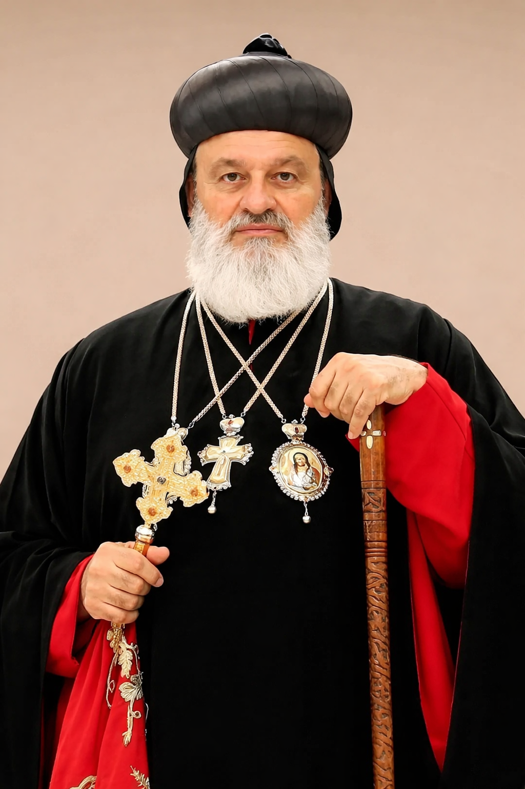
His Holiness Moran Mor Ignatius Aphrem II
Moran Mor Ignatius Aphrem II is the 123rd Patriarch of the See of Antioch & All The East adorning the Throne of St. Peter, the Chief of Apostles, and the Supreme Pontiff of the Universal Syrian Orthodox Church. His Holiness was chosen to lead the Holy Church at the Universal Synod held on Monday 31st March 2014 at Lebanon after the demise of blessed Patriarch Ignatius Zakka-I Iwas and was installed as the supreme head of the Syriac Church at a divine ceremony presided over by Aboon Mor Baselios Thomas-I, the Catholicos of India and assisted by the metropolitans of the Universal Church, held at the St. Peter & St. Paul's Cathedral in the monastery of Mor Aphrem in Ma`arat Sayyidnaya near Damascus, Syria on 29th May 2014, the remembrance day of Ascension of our Lord Jesus Christ.
The universal Syrian Orthodox Church perceives its strength and Unity in His Holiness the Patriarch, the supreme head of the Church. As the Sucessor of the St.Peter, His Holiness is the embodiment and symbol of unity of the universal Syrian Orthodox Church. This embodiment signifies two type of representative characters. Firstly, as the successor of St.Peter, the patriarch represent him.
As St.Peter is the chief shepherd and supreme head, the Patriarch by virtue of his position upholds the unity of the Universal Syrian Orthodox Church. Since the Patrirach’s ordination and conornation are deemed to be through the grace of the Holy Ghost and by the will of God, the first representative character is bestowed from above and is divine. So the Patriarch as the high priest the Universal Church, represents Jesus Christ when he celebrates the Holy Eucharist. Secondly the Patriarch as the chief Shepherd of the Church, is the emissary of the entire body of believers. The church is not only an invisible spiritual fellowship but is also a historical reality. So, all the attributes of the Church like one, Holy, Chatholic and Apostolic must also become a historical reality. And the Patriarchs who are ordained from time to time and represent the universal Syrian Church as the Supreme heads, make the unity of the Church a reality.
Our Catholicos
Catholicose of the East
His Beatitude Aboon Mor Baselios Joseph
Catholicos Baselios Joseph is the fifth Maphrian i.e. Catholicos of the Syriac Orthodox Church in India and Malankara Metropolitan of the Jacobite Syrian Christian Church.
His official title is Catholicos of India. His Beatitude is a senior hierarch of the Syriac Orthodox Church, known for his spiritual depth, pastoral wisdom, and commitment to upholding the faith, traditions, and liturgical heritage of the West Syriac tradition.
His Beatitude succeeded Late Lamented Baselios Thomas I, thereby continuing the apostolic legacy of the Catholicate of the East in India. This succession ensured continuity in spiritual leadership and reaffirmed the historic and canonical relationship of the Indian Church with the Syriac Orthodox Patriarchate of Antioch.
The enthronement of His Beatitude was solemnly conducted by Ignatius Aphrem II, the Patriarch of Antioch and All the East, emphasizing the unity of the Indian Church with the Universal Syriac Orthodox Church. As Catholicos, His Beatitude provides spiritual guidance and pastoral leadership to clergy and faithful across India, strengthening church life through prayer, teaching, and faithful witness to the Orthodox tradition.

Feast Days We Celebrate
Throughout the liturgical year, we honor the saints who have gone before us, celebrating their lives of faith and seeking their intercession.
St. Elias III, Manjinikkara
St. George
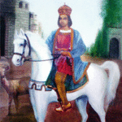
St. Gregorios of Parumala & St. Eldho Mor Baselios Bava
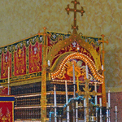
St. Martyrs of Sebasthya & Mor Behanan Sahdo
Spiritual Organizations
Sunday School
By 1920s, the then elders taught the children, prayers and songs of the Holy Church. Later, when the then diocesian metropolitan Paulose Mor Athanius, through a bull started the Sunday School Association, the existing facility was merged.
MarthaMariyam Vanitha Samajam
Established in 1951, MarthaMariyam Vanitha Samajam is working in the spiritual needs and charity. It was in 1958 that coir mats were first used inside the church, which was donated by Vanitha Samajam.
Youth Association
St. George Youth Association was started in 1951, whose members are actively participating in all the spiritual activities of the church.
Elder's Association
Devoted elder members who serve as spiritual guides and mentors, and supports those in need, within the community.
Anthiokhya Viswasa Samrakshana Samithi
Started with the motive to affirm the faith in the Holy Syriac Orthodox Church of Antioch, and to affirm that the primate of the Holy Church in Malankara is the Patriarch of Antioch.
Family Units
Family Units was started forcreating unity among the parishioners and strengthening the faith and integrity towards the Holy Church.
Parish Gallery
Moments of faith, fellowship, and celebration captured through the years
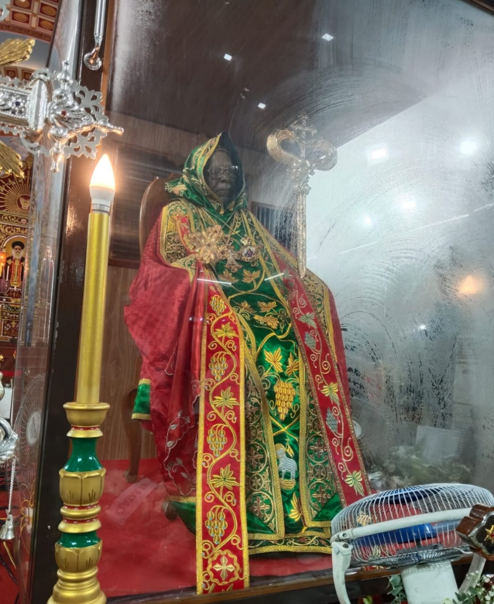
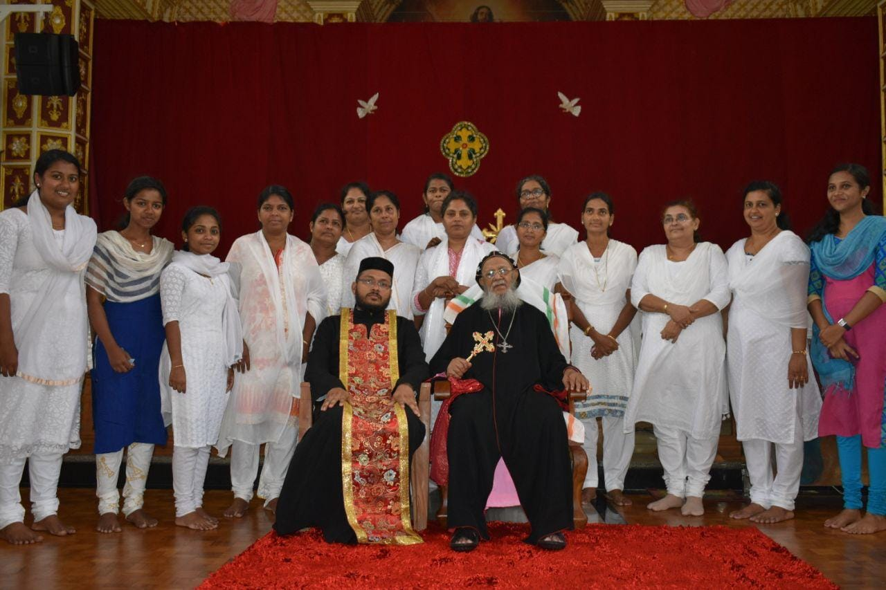
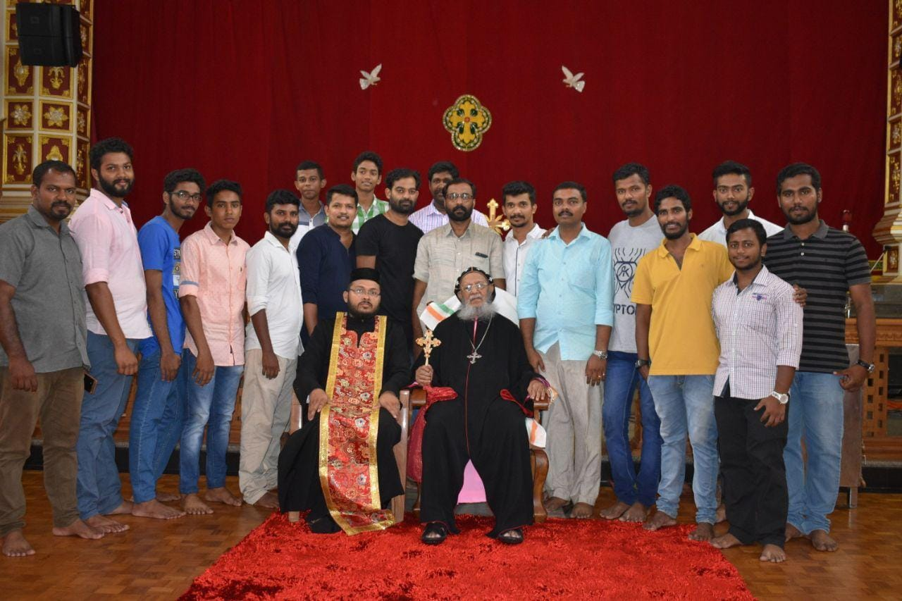
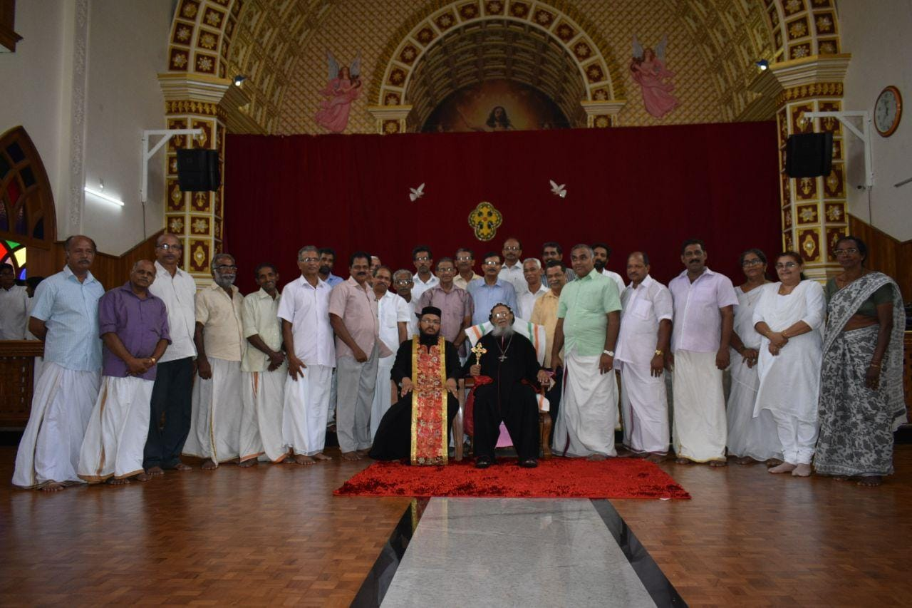
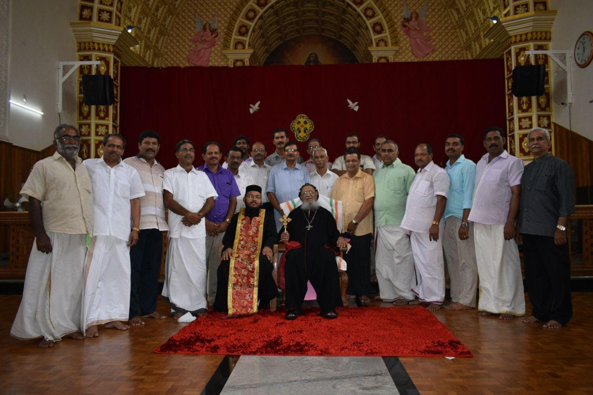
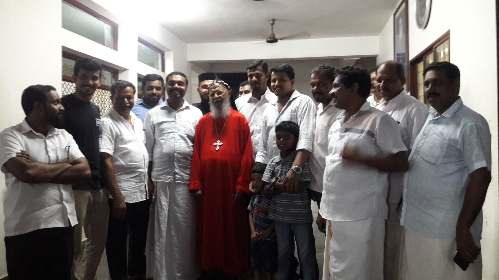
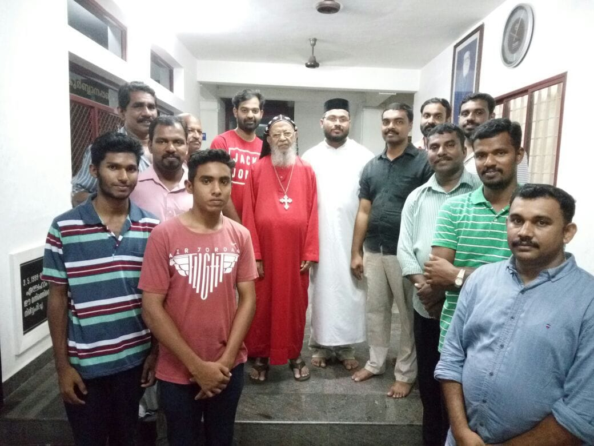
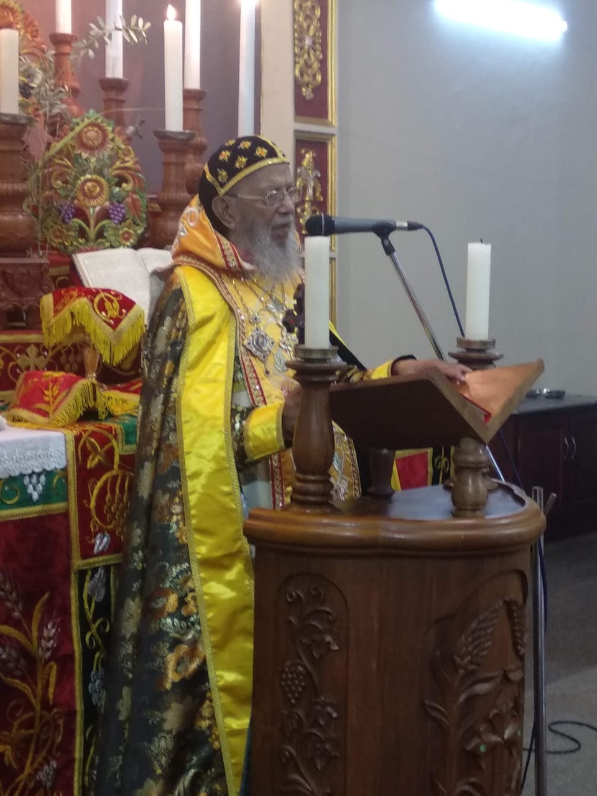
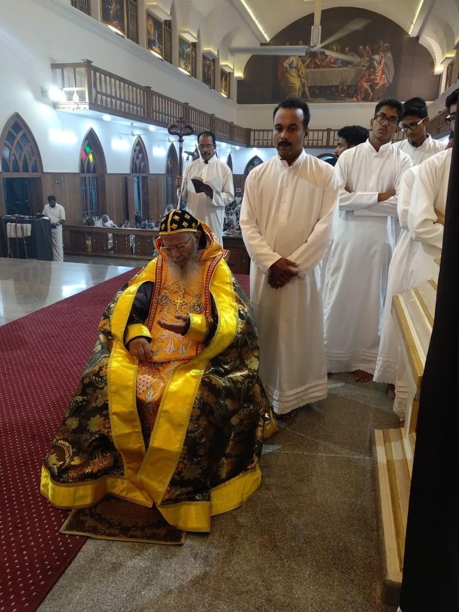
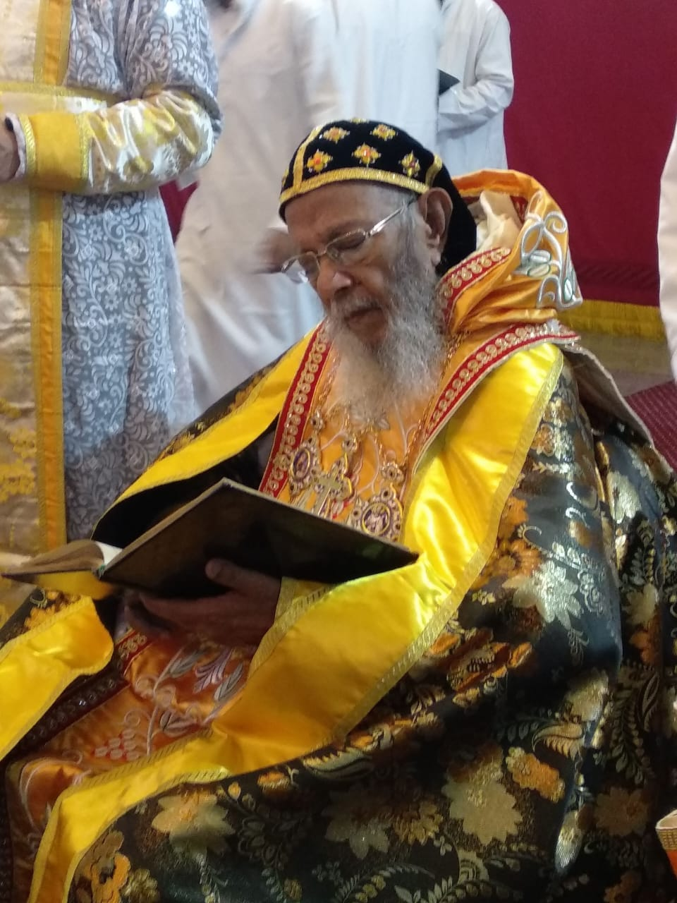
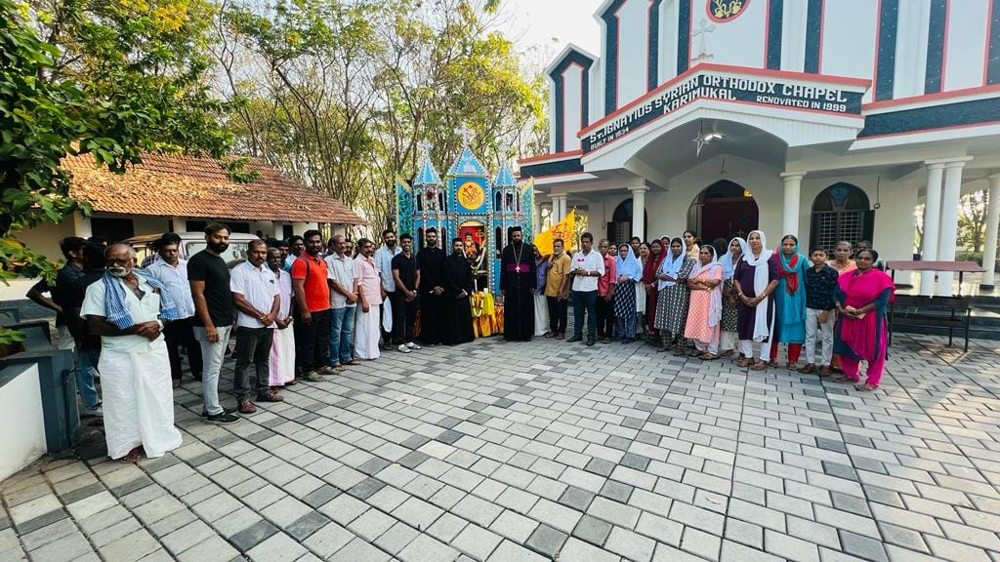
Visit our Facebook page for the complete album collection.
View Facebook AlbumsContact Us
Address
St. George Jacobite Syrian
Church
Cheruthottukunnel, Pinarmunda
Peringala P.O., Ernakulam
Kerala, India, 683565
Phone
Holy Mass Timings
Sundays
8:00 AM
Moranaya Feasts
7:00 AM
Feasts
8:30 AM
Other Days
7:00 AM